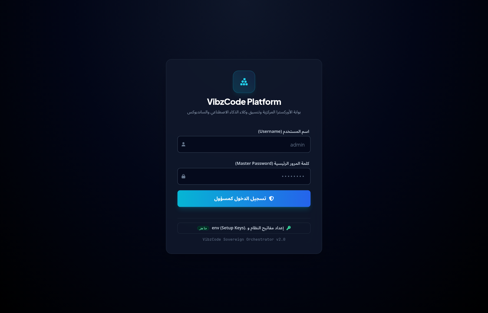

واجهات مصممة باحترافية لتجربة عمل سلسة
لقطات حقيقية من منصة VibzCode توضح كفاءة لوحة التحكم المركزية وبيئة عمل الوكيل الذكي.
https://vibzcode.local:3334/
Online

لوحة الإدارة المركزية: فرز الجلسات حسب تاريخ الإنشاء أو النشاط، مفضلة، تثبيت بالقمة، وقائمة 3-dots للتحكم الكامل.
35+ Sessions